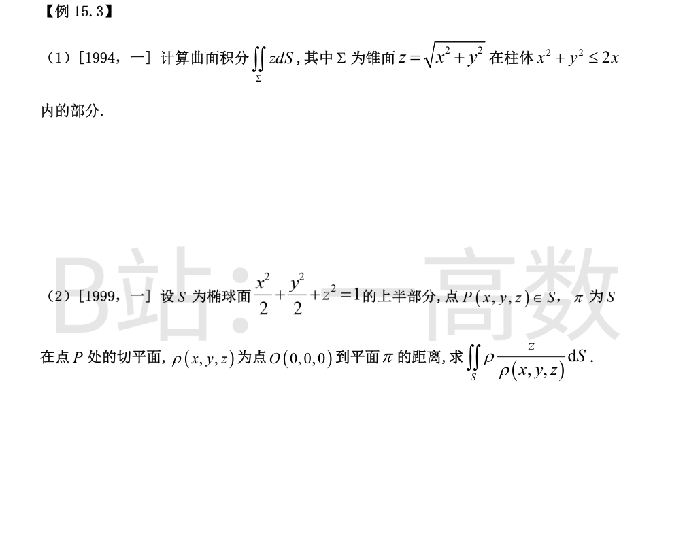
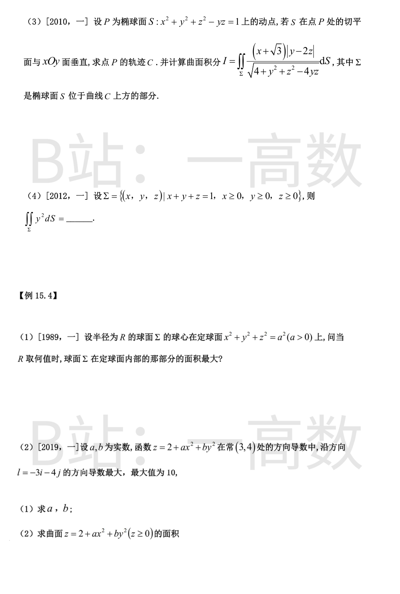
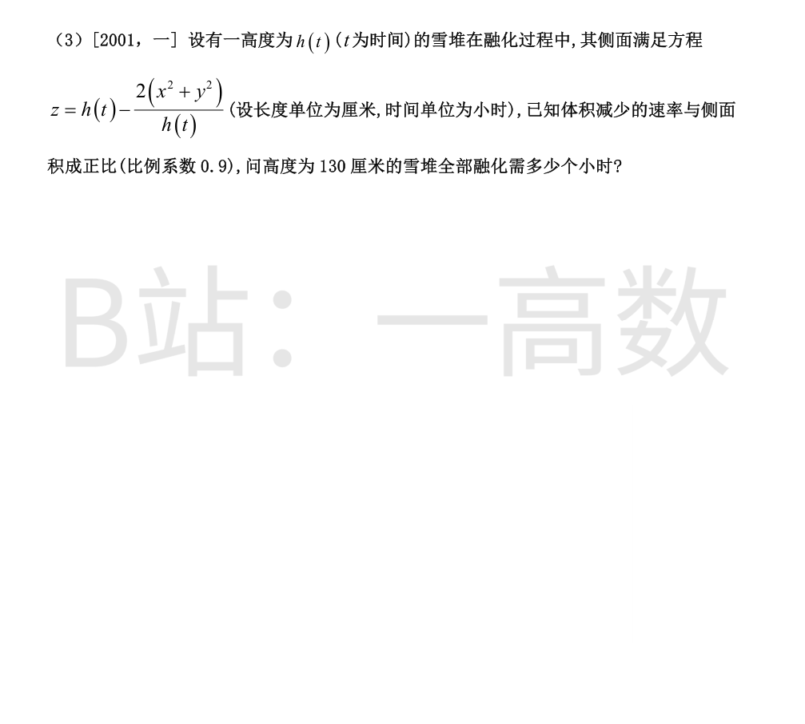
锥面 z=√(x²+y²)，$z_x=\frac{x}{\sqrt{x^2+y^2}},\ z_y=\frac{y}{\sqrt{x^2+y^2}}$，故 $\sqrt{1+z_x^2+z_y^2}=\sqrt2$，$dS=\sqrt2\,dxdy$，投影 $D:\ x^2+y^2\le 2x$。
$$\iint_\Sigma z\,dS=\sqrt2\iint_D\sqrt{x^2+y^2}\,dxdy=\sqrt2\int_{-\pi/2}^{\pi/2}\!d\theta\int_0^{2\cos\theta}r^2dr=\frac{8\sqrt2}{3}\int_{-\pi/2}^{\pi/2}\cos^3\theta\,d\theta=\frac{8\sqrt2}{3}\cdot\frac43=\frac{32\sqrt2}{9}.$$
（$\int_{-\pi/2}^{\pi/2}\cos^3\theta\,d\theta=\frac43$。）
（原书分子疑多排一个 ρ，按 1999 年真题原意取被积函数 $\frac{z}{\rho(x,y,z)}$。）
切平面：$F=\frac{x^2}{2}+\frac{y^2}{2}+z^2-1$，$\nabla F=(x,y,2z)$，过 $P(x,y,z)$：$xX+yY+2zZ=x^2+y^2+2z^2=2$，故 $\rho=\frac{2}{\sqrt{x^2+y^2+4z^2}}$。
上半椭球 $z=\sqrt{1-\frac{x^2+y^2}{2}}$：$\sqrt{1+z_x^2+z_y^2}=\frac{\sqrt{x^2+y^2+4z^2}}{2z}$（即 $\frac{|\nabla F|}{|F_z|}$）。
$$\frac{z}{\rho}dS=\frac{z\sqrt{x^2+y^2+4z^2}}{2}\cdot\frac{\sqrt{x^2+y^2+4z^2}}{2z}\,dxdy=\frac{x^2+y^2+4z^2}{4}\,dxdy.$$
投影 $D:\ x^2+y^2\le 2$，且 $4z^2=4-2(x^2+y^2)$，被积式 $=1-\frac{x^2+y^2}{4}$：
$$I=\iint_D\Big(1-\frac{r^2}{4}\Big)dxdy=2\pi-\frac14\int_0^{2\pi}\!\!\int_0^{\sqrt2}r^3drd\theta=2\pi-\frac{2\pi}{4}=\frac{3\pi}{2}.$$
（数值复核：直接在椭球面上作第一型面积分 $=4.712207=\frac{3\pi}{2}$ ✓）
**求 C**：$F=x^2+y^2+z^2-yz-1$，$\boldsymbol n=(2x,\,2y-z,\,2z-y)$。切平面垂直 xOy 面 $\Leftrightarrow$ 法向量水平 $\Leftrightarrow 2z-y=0$，即 $y=2z$。代入曲面：$x^2+4z^2+z^2-2z^2=1$，得
$$C:\ \{y=2z,\ x^2+3z^2=1\}.$$
**求 I**：$\Sigma=\{S\text{ 上 }2z-y\ge0\}$（含 $z$ 的最大值点 $(0,\frac{\sqrt3}{3},\frac{2\sqrt3}{3})$）。恒等式（用 $4x^2=4-4y^2-4z^2+4yz$）：
$$(2z-y)^2+(2y-z)^2+4x^2=4+y^2+z^2-4yz.$$
把 $\Sigma$ 向 xOy 面投影：解出 $z=\frac{y\pm\sqrt{4-4x^2-3y^2}}{2}$，条件 $z\ge y/2$ 恒选“+”支，故 $\Sigma$ 是 $D:\ 4x^2+3y^2\le4$ 上的单叶图 $z=z(x,y)$，且 $z_x=\frac{-2x}{2z-y},\ z_y=\frac{-(2y-z)}{2z-y}$，
$$dS=\sqrt{1+z_x^2+z_y^2}\,dxdy=\frac{\sqrt{4+y^2+z^2-4yz}}{2z-y}\,dxdy.$$
于是被积式化为
$$\frac{(x+\sqrt3)|y-2z|}{\sqrt{4+y^2+z^2-4yz}}\cdot dS=\frac{(x+\sqrt3)(2z-y)}{2z-y}\,dxdy=(x+\sqrt3)\,dxdy.$$
$$I=\iint_D(x+\sqrt3)\,dxdy=0+\sqrt3\cdot\pi\cdot1\cdot\frac{2}{\sqrt3}=2\pi.$$
（区域 $D$ 为半轴 $1,\frac{2}{\sqrt3}$ 的椭圆；$x$ 的奇次项由对称性消失。数值复核：在参数化椭球面上直接积分 $=6.283185=2\pi$ ✓）
平面 $z=1-x-y$，$dS=\sqrt{1+z_x^2+z_y^2}\,dxdy=\sqrt3\,dxdy$，投影 $D:\ x\ge0,y\ge0,x+y\le1$。
$$\iint_\Sigma y^2dS=\sqrt3\iint_D y^2\,dxdy=\sqrt3\int_0^1 y^2(1-y)\,dy=\sqrt3\Big(\frac13-\frac14\Big)=\frac{\sqrt3}{12}.$$
（数值复核 $=0.144338=\frac{\sqrt3}{12}$ ✓）
由对称性设球心 $(0,0,a)$：$x^2+y^2+(z-a)^2=R^2$。在 Σ 上与定球方程联立：$R^2=x^2+y^2+z^2+a^2-2az$，故“在定球内”$\Leftrightarrow x^2+y^2+z^2\le a^2\Leftrightarrow z\le a-\frac{R^2}{2a}$。
即所求部分为球冠（下冠），高 $h=\big(a-\frac{R^2}{2a}\big)-(a-R)=R-\frac{R^2}{2a}$（$0<R\le2a$）。
$$A(R)=2\pi Rh=2\pi R^2-\frac{\pi R^3}{a},\quad A'(R)=4\pi R-\frac{3\pi R^2}{a}=0\Rightarrow R=\frac{4a}{3}.$$
$A''<0$ 且 $A(0)=0$，故 $R=\frac{4a}{3}$ 时面积最大（$A_{\max}=\frac{32\pi a^2}{27}$）。
(1) $\nabla z\big|_{(3,4)}=(6a,\,8b)$。方向导数沿梯度方向取得最大值 $|\nabla z|$，故 $(6a,8b)$ 与 $(-3,-4)$ 同向：设 $(6a,8b)=t(-3,-4)\ (t>0)$，得 $a=b=-\frac t2$；$|\nabla z|=5t=10\Rightarrow t=2$，故 $a=b=-1$。
(2) $z=2-x^2-y^2$，$z\ge0\Rightarrow D:\ x^2+y^2\le2$，$z_x=z_y$ 的模给出 $dS=\sqrt{1+4x^2+4y^2}\,dxdy$：
$$S=\int_0^{2\pi}\!\!\int_0^{\sqrt2}r\sqrt{1+4r^2}\,dr\,d\theta=2\pi\cdot\frac{1}{12}(1+4r^2)^{3/2}\Big|_0^{\sqrt2}=\frac{\pi}{6}(27-1)=\frac{13\pi}{3}.$$
（数值复核 $=13.61357=\frac{13\pi}{3}$ ✓）
底半径 $r_0$：$h-\frac{2r_0^2}{h}=0\Rightarrow r_0=\frac{h}{\sqrt2}$。
体积：$V=\iint\big(h-\tfrac{2r^2}{h}\big)dA=2\pi\int_0^{h/\sqrt2}\big(hr-\tfrac{2r^3}{h}\big)dr=2\pi\big(\tfrac{h^3}{4}-\tfrac{h^3}{8}\big)=\frac{\pi h^3}{4}$。
侧面积：$z_x=-\frac{4x}{h},\ z_y=-\frac{4y}{h}$，$S=\iint_D\sqrt{1+\tfrac{16r^2}{h^2}}\,dA=2\pi\int_0^{h/\sqrt2}r\sqrt{1+\tfrac{16r^2}{h^2}}dr=\frac{\pi h^2}{24}\big[(1+8)^{3/2}-1\big]=\frac{13\pi h^2}{12}$。
由 $-\frac{dV}{dt}=0.9S$：$-\frac{3\pi h^2}{4}h'=0.9\cdot\frac{13\pi h^2}{12}\Rightarrow h'=-1.3$ cm/h。
$h=130-1.3t=0\Rightarrow t=100$ 小时。
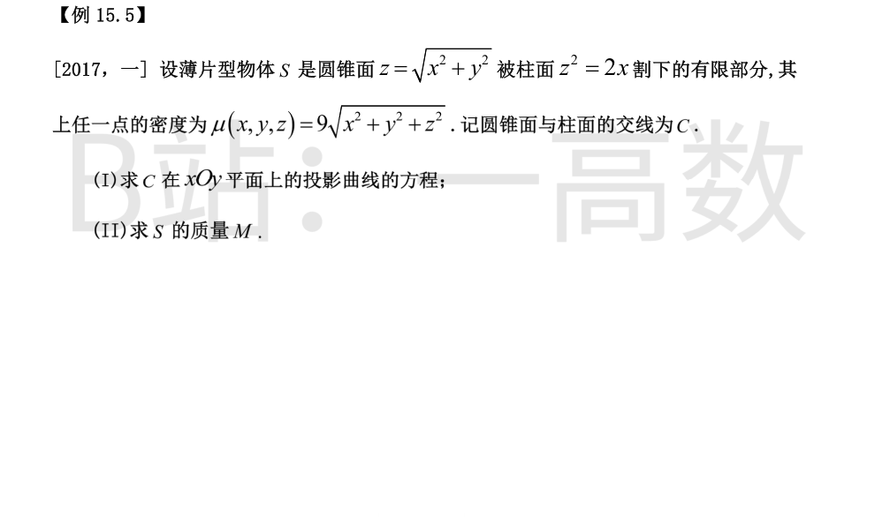
联立 $z^2=x^2+y^2$ 与 $z^2=2x$，消去 $z$：$x^2+y^2=2x$；又锥面上 $z=\sqrt{x^2+y^2}=\sqrt{2x}\ge0$。
故投影曲线为 $\{x^2+y^2=2x,\ z=0\}$（圆 $(x-1)^2+y^2=1$）。
锥面上 $\sqrt{1+z_x^2+z_y^2}=\sqrt2$，$z^2=x^2+y^2=r^2$，故 $\mu=9\sqrt{2r^2}=9\sqrt2\,r$；投影 $D:\ x^2+y^2\le2x$（即 $r\le2\cos\theta,\ \theta\in[-\frac\pi2,\frac\pi2]$）。
$$M=\iint_S\mu\,dS=\iint_D 9\sqrt2\,r\cdot\sqrt2\,dxdy=18\int_{-\pi/2}^{\pi/2}\!\!\int_0^{2\cos\theta}r^2dr\,d\theta=18\cdot\frac83\cdot\frac43=64.$$
（数值复核 $=63.9991\approx64$ ✓）
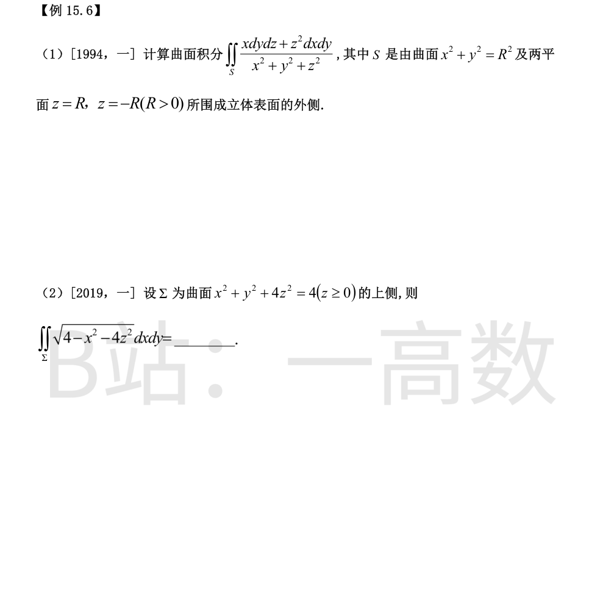
S 包含原点，不能用 Gauss。分块直接算。
上盘 $z=R$（$\cos\gamma=1$）：被积式 $=\frac{R^2}{R^2}=1$，积分 $=\pi R^2$；下盘 $z=-R$（$\cos\gamma=-1$）：$=-\pi R^2$，二者抵消。
侧面 $x^2+y^2=R^2$：$\cos\gamma=0$，只剩 $\frac{x\,dydz}{r^2}$；$\boldsymbol n=\big(\frac xR,\frac yR,0\big)$，$dS=R\,d\theta dz$，$r^2=R^2+z^2$：
$$\iint_{\text{侧}}\frac{x\cos\alpha}{r^2}dS=\int_{-R}^{R}\!\!\int_0^{2\pi}\frac{R\cos\theta\cdot\cos\theta\cdot R}{R^2+z^2}\,d\theta dz=\pi R^2\int_{-R}^{R}\frac{dz}{R^2+z^2}=\pi R^2\cdot\frac1R\cdot\frac\pi2=\frac{\pi^2R}{2}.$$
故 $I=\frac{\pi^2R}{2}$。（数值复核 R=1 时 $=4.934802=\frac{\pi^2}{2}$ ✓）
在 $\Sigma$ 上 $4-x^2-4z^2=y^2$，被积函数恒等于 $|y|$。上侧投影到 xOy 面：$z=\frac12\sqrt{4-x^2-y^2}$，$D:\ x^2+y^2\le4$，第二型积分直接化为
$$I=\iint_D|y|\,dxdy=\int_0^{2\pi}|\sin\theta|\,d\theta\int_0^2 r^2dr=4\cdot\frac83=\frac{32}{3}.$$
（数值复核 $=10.666667$ ✓）
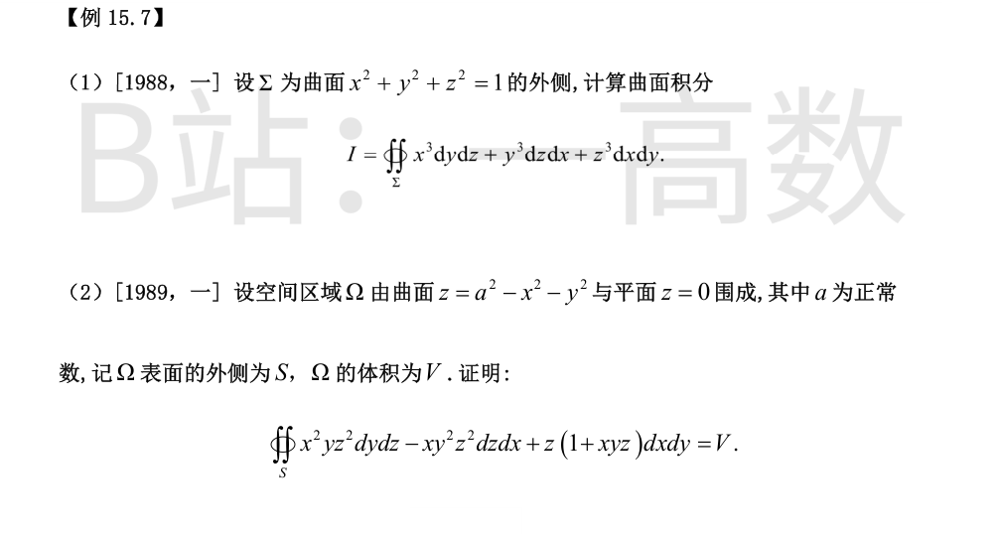
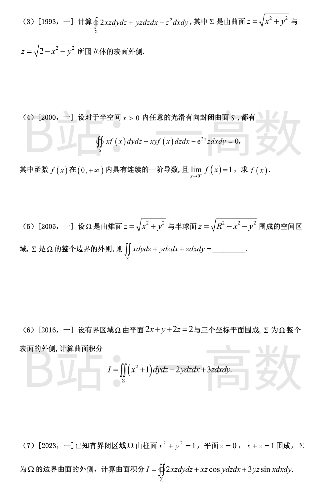
$\text{div}\,\boldsymbol F=3(x^2+y^2+z^2)$。Gauss 公式（球坐标 $\rho=\sqrt{x^2+y^2+z^2}$）：
$$I=3\int_0^{2\pi}\!\!\int_0^{\pi}\!\!\int_0^1\rho^2\cdot\rho^2\sin\varphi\,d\rho d\varphi d\theta=3\cdot4\pi\cdot\frac15=\frac{12\pi}{5}.$$
（数值复核 $=7.539822$ ✓）
记 $\boldsymbol F=(x^2yz^2,\ -xy^2z^2,\ z(1+xyz))$，则
$$\text{div}\,\boldsymbol F=2xyz^2-2xyz^2+\big[(1+xyz)+z\cdot xy\big]=1+2xyz.$$
由 Gauss 公式：$\oiint_S\boldsymbol F\cdot d\boldsymbol S=\iiint_\Omega(1+2xyz)dV=V+2\iiint_\Omega xyz\,dV$。
Ω 关于平面 $x=0$ 对称（$x\to-x$ 时方程不变），而 $xyz$ 关于 $x$ 为奇函数，故 $\iiint_\Omega xyz\,dV=0$。
从而 $\oiint_S=V$。∎
$\text{div}=2z+z-2z=z$。锥与球交线：$z=r,\ z^2=2-r^2\Rightarrow z=1,\ r=1$。球坐标下 $\Omega:\ 0\le\theta\le2\pi,\ 0\le\varphi\le\frac\pi4,\ 0\le\rho\le\sqrt2$：
$$I=\iiint_\Omega z\,dV=\int_0^{2\pi}\!\!\int_0^{\pi/4}\!\!\int_0^{\sqrt2}\rho\cos\varphi\cdot\rho^2\sin\varphi\,d\rho d\varphi d\theta=2\pi\cdot\frac12\sin^2\frac\pi4\cdot\frac{(\sqrt2)^4}{4}=2\pi\cdot\frac14=\frac{\pi}{2}.$$
（数值复核 $=1.570796$ ✓）
【仲裁修正】独立校验发现分歧，经仲裁重解，以本答案为准：B 错：div F=2z+z-2z=z，球坐标（ρ≤√2，φ≤π/4）∭z dV=2π·(1/4)·(√2)⁴/4=π/2，B 的 π/4 漏了一半（数值复核 1.570796 ✓）
任意闭曲面上通量为零 $\Leftrightarrow$ 散度恒为零：
$$\frac{\partial(xf)}{\partial x}+\frac{\partial(-xyf)}{\partial y}+\frac{\partial(-e^{2x}z)}{\partial z}=f+xf'-xf-e^{2x}=0,$$
即 $xf'+(1-x)f=e^{2x}$，标准化 $f'+\big(\frac1x-1\big)f=\frac{e^{2x}}{x}$。积分因子 $\mu=e^{\int(1/x-1)dx}=xe^{-x}$：
$$(xe^{-x}f)'=e^{x}\Rightarrow xe^{-x}f=e^{x}+C\Rightarrow f=\frac{e^{2x}+Ce^{x}}{x}.$$
由 $\lim_{x\to0^+}f=1$ 须分子 $\to0$：$1+C=0\Rightarrow C=-1$。故 $f(x)=\dfrac{e^{2x}-e^{x}}{x}$。
$\text{div}=3$，故 $I=3V$。锥与球交于 $z=\frac R{\sqrt2},\ r=\frac R{\sqrt2}$。
$$V=\pi\int_0^{R/\sqrt2}z^2dz+\pi\int_{R/\sqrt2}^{R}(R^2-z^2)dz=\frac{\pi R^3}{6\sqrt2}+\pi R^3\Big(\frac23-\frac{5}{6\sqrt2}\Big)=\frac{2\pi R^3}{3}\Big(1-\frac{1}{\sqrt2}\Big).$$
$$I=3V=(2-\sqrt2)\pi R^3.\quad(\text{数值复核}=1.840302\ \checkmark)$$
$\text{div}=2x-2+3=2x+1$。四面体顶点 $(0,0,0),(1,0,0),(0,2,0),(0,0,1)$，$V=\frac16\cdot1\cdot2\cdot1=\frac13$。
截面法：固定 $x$，截面为直角三角形（直角边 $2(1-x)$ 与 $(1-x)$），面积 $(1-x)^2$：
$$\iiint_\Omega x\,dV=\int_0^1 x(1-x)^2dx=\int_0^1(x-2x^2+x^3)dx=\frac12-\frac23+\frac14=\frac1{12}.$$
$$I=\iiint_\Omega(2x+1)dV=2\cdot\frac1{12}+\frac13=\frac12.\quad(\text{数值复核}=0.50017\ \checkmark)$$
$\text{div}=2z-xz\sin y+3y\sin x$。对固定的 $x$，$y\in[-\sqrt{1-x^2},\sqrt{1-x^2}]$ 关于 $0$ 对称，而 $\sin y$、$y$ 均为奇函数，故
$$\iiint_\Omega xz\sin y\,dV=0,\qquad \iiint_\Omega 3y\sin x\,dV=0.$$
$$I=\iiint_\Omega 2z\,dV=\iint_{x^2+y^2\le1}\frac{(1-x)^2}{2}\,dxdy\cdot2=\iint_D(1-2x+x^2)dA=\pi+0+\frac{\pi}{4}=\frac{5\pi}{4}.$$
（数值复核 $=3.926991=\frac{5\pi}{4}$ ✓）
【仲裁修正】独立校验发现分歧，经仲裁重解，以本答案为准：A 错：由区域关于 y 的对称性，xz sin y 与 3y sin x 项积分为 0，I=∬_{x²+y²≤1}(1-x)²dA=π+π/4=5π/4（数值复核 3.926991 ✓）
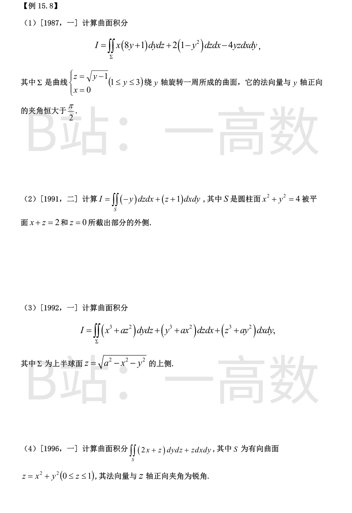
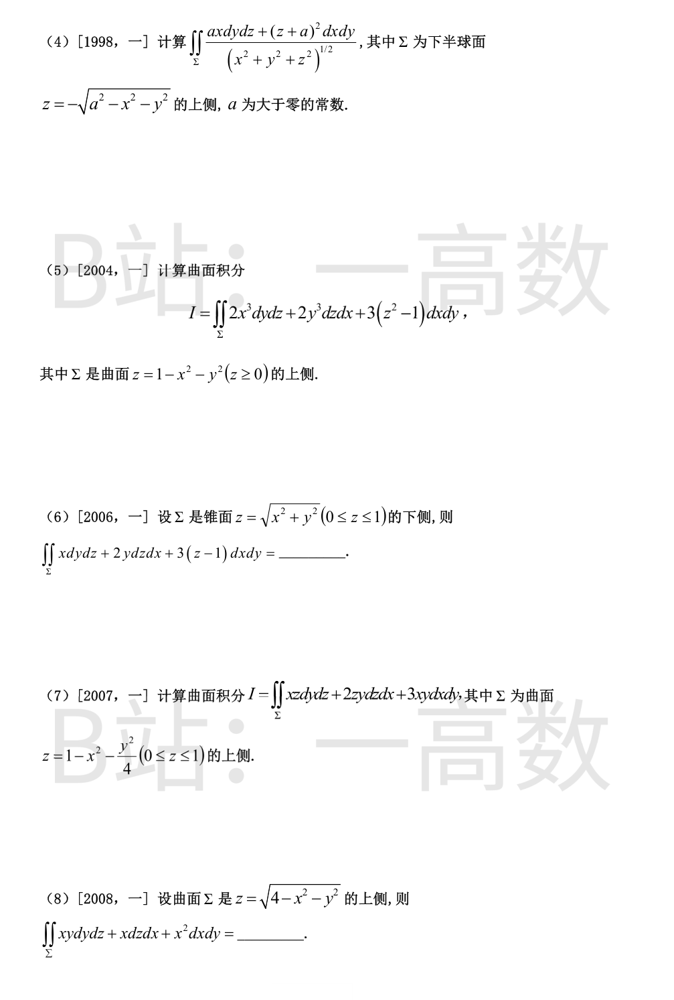
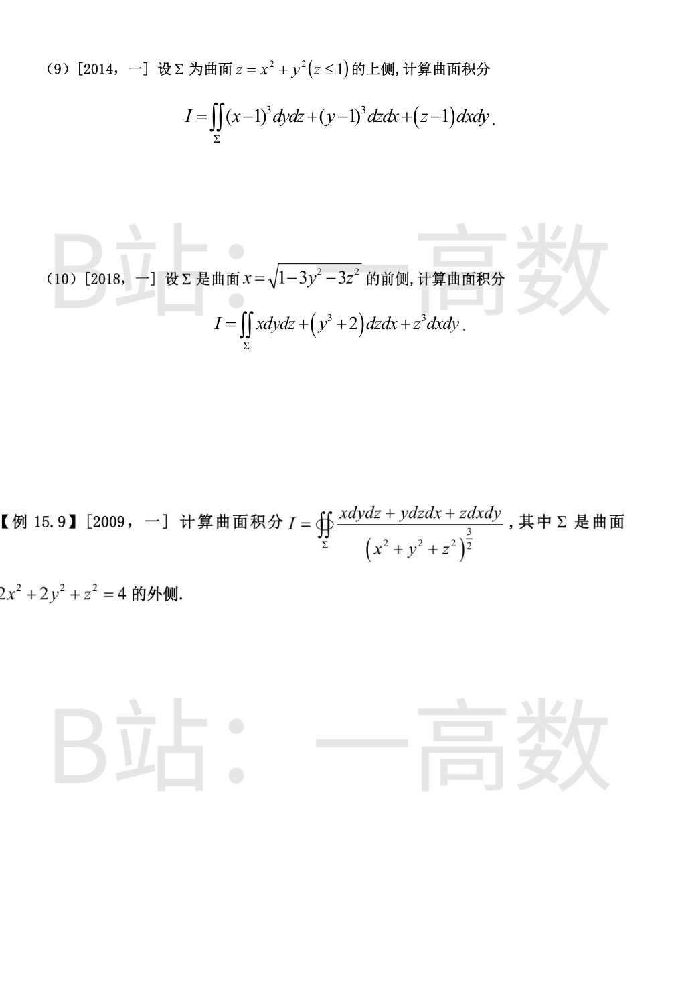
旋转面：$y=x^2+z^2+1$（$1\le y\le3$，开口向 $+y$ 的抛物面）。所给定向（与 $y$ 轴夹角 $>\frac\pi2$）即 Ω$=\{x^2+z^2+1\le y\le3\}$ 的外侧。
补 $D_1$：$y=3,\ x^2+z^2\le2$，法向 $+y$。$\text{div}=(8y+1)-4y-4y=1$：
$$\oiint=\iiint_\Omega dV=\iint_{x^2+z^2\le2}\big[3-(x^2+z^2+1)\big]dxdz=\int_0^{2\pi}\!\!\int_0^{\sqrt2}(2-r^2)r\,dr\,d\theta=2\pi.$$
$D_1$ 上 $\boldsymbol F\cdot\boldsymbol j=2(1-y^2)=-16$，flux $=-16\cdot\pi(\sqrt2)^2=-32\pi$。
$$I=\oiint-\iint_{D_1}=2\pi-(-32\pi)=34\pi.\quad(\text{数值复核}=106.8141\ \checkmark)$$
$\boldsymbol F=(0,-y,z+1)$，$\text{div}=0-1+1=0$。补上顶斜盘 $D_1:\ z=2-x,\ x^2+y^2\le4$（$\boldsymbol n=\frac{(1,0,1)}{\sqrt2}$）与底盘 $D_2:\ z=0$（$\boldsymbol n=(0,0,-1)$），构成闭曲面的外侧。
$$\oiint_{\text{闭}}=\iiint_\Omega 0\,dV=0.$$
$D_1$：$dS=\sqrt2\,dxdy$，$\boldsymbol F\cdot\boldsymbol n\,dS=(z+1)\,dxdy=(3-x)dxdy$，$\iint_{D_1}=3\cdot4\pi=12\pi$（奇次项消失）。
$D_2$：$\boldsymbol F\cdot\boldsymbol n=-(z+1)=-1$，flux $=-4\pi$。
$$I=0-12\pi-(-4\pi)=-8\pi.$$
（直接参数化验证：$\iint_S(-y)\cos\beta\,dS=\int_0^{2\pi}\!\!\int_0^{2-2\cos\theta}(-2\sin\theta)\sin\theta\cdot2\,dz\,d\theta=-8\pi$ ✓，且 $\cos\gamma=0$ 时 dxdy 项为零 ✓）
补 $D:\ z=0,\ x^2+y^2\le a^2$，$\boldsymbol n=(0,0,-1)$。$\text{div}=3(x^2+y^2+z^2)$：
$$\oiint=3\iiint_{\text{半球}}\rho^2dV=3\cdot\frac12\cdot\frac{4\pi a^5}{5}=\frac{6\pi a^5}{5}.$$
$D$ 上 $\boldsymbol F\cdot\boldsymbol n=-(z^3+ay^2)=-ay^2$，$\iint_D=-a\cdot\frac{\pi a^4}{4}=-\frac{\pi a^5}{4}$。
$$I=\frac{6\pi a^5}{5}+\frac{\pi a^5}{4}=\frac{29\pi a^5}{20}.$$
（直接法复核：上半球面上 $\boldsymbol F\cdot\boldsymbol n=x^4+y^4+z^4+xz^2+x^2y+y^2z$，奇对称项中 $y^2z$ 不消失，$\iint y^2z\,dS=\frac{\pi a^5}{4}$，其余奇项为 0，$\iint(x^4+y^4+z^4)dS=\frac{6\pi a^5}{5}$，合计 $\frac{29\pi a^5}{20}$ ✓，数值 $=4.555310$ ✓）
补 $D:\ z=1,\ x^2+y^2\le1$，$\boldsymbol n=(0,0,1)$。$\text{div}=2+1=3$：$\oiint=3V=3\iint_{r\le1}(1-r^2)dA=\frac{3\pi}{2}$。
$D$ 上 $\boldsymbol F\cdot\boldsymbol n=z=1$：flux $=\pi$。故 $\iint_S^{\text{外}}=\frac{3\pi}{2}-\pi=\frac\pi2$（外法向朝下，与 z 轴夹角钝角）。
所给定方向（与 z 轴成锐角）为其相反侧：$I=-\frac{\pi}{2}$。
（数值复核 $=-1.570796$ ✓）
Σ 上 $\sqrt{x^2+y^2+z^2}=a$：$I=\frac1a\iint_\Sigma ax\,dydz+(z+a)^2dxdy$。补 $D:\ z=0,\ x^2+y^2\le a^2$，$\boldsymbol n=(0,0,1)$（下半球体 Ω 的外侧面）。取 $\boldsymbol F=\big(x,\,0,\,\frac{(z+a)^2}{a}\big)$：$\text{div}=1+\frac{2(z+a)}{a}=3+\frac{2z}{a}$。
$$\oiint_\Omega=3\cdot\frac{2\pi a^3}{3}+\frac2a\iiint z\,dV=2\pi a^3+\frac2a\Big(-\frac{\pi a^4}{4}\Big)=\frac{3\pi a^3}{2}.$$
$D$ 上 $\boldsymbol F\cdot\boldsymbol n=\frac{(0+a)^2}{a}=a$：flux $=\pi a^3$。故 $\iint_\Sigma^{\text{外}}=\frac{3\pi a^3}{2}-\pi a^3=\frac{\pi a^3}{2}$。
Σ 的上侧（法向量朝上）指向球心，为内侧：$I=-\frac{\pi a^3}{2}$。（数值复核 $=-1.570796$ ✓）
补 $D:\ z=0,\ x^2+y^2\le1$，$\boldsymbol n=(0,0,-1)$。$\text{div}=6x^2+6y^2+6z$。
$$\oiint=6\iiint_\Omega(x^2+y^2)dV+6\iiint_\Omega z\,dV=6\cdot\frac{\pi}{6}+6\cdot\frac{\pi}{6}=2\pi,$$
其中 $\iiint(x^2+y^2)dV=\int_0^1\frac{\pi}{2}(1-z)^2dz=\frac\pi6$，$\iiint z\,dV=\int_0^1 z\pi(1-z)dz=\frac\pi6$。
$D$ 上 $\boldsymbol F\cdot\boldsymbol n=-3(z^2-1)=3$：flux $=3\pi$。抛物面碗的外法向朝上，与上侧一致：$I=2\pi-3\pi=-\pi$。（数值复核 $=-3.141593$ ✓）
$\text{div}=1+2+3=6$。补 $D:\ z=1,\ x^2+y^2\le1$，$\boldsymbol n=(0,0,1)$：$\boldsymbol F\cdot\boldsymbol n=3(z-1)=0$，flux $=0$。
$$I=\oiint=6V=6\cdot\frac{\pi}{3}=2\pi.\quad(\text{数值复核}=6.283185\ \checkmark)$$
补 $D:\ z=0,\ x^2+\frac{y^2}{4}\le1$（椭圆，面积 $2\pi$），$\boldsymbol n=(0,0,-1)$：$\boldsymbol F\cdot\boldsymbol n=-3xy$，由对称性 flux $=0$。$\text{div}=z+2z=3z$：
$$\oiint=\iiint_\Omega 3z\,dV=\int_0^1 3z\cdot\pi\sqrt{1-z}\cdot2\sqrt{1-z}\,dz=6\pi\int_0^1 z(1-z)dz=\pi.$$
Ω 的外法向在 Σ 上朝上，与上侧一致：$I=\pi$。（数值复核 $=3.141593$ ✓）
补 $D:\ z=0,\ x^2+y^2\le4$，$\boldsymbol n=(0,0,-1)$：$\boldsymbol F\cdot\boldsymbol n=-x^2$，$\iint_D=-\frac12\iint_D(x^2+y^2)dA=-\frac12\int_0^{2\pi}\!\!\int_0^2 r^3dr\,d\theta=-4\pi$。
$\text{div}=y$：$\oiint=\iiint_\Omega y\,dV=0$（对称性）。上侧即上半球体外侧：
$$I=0-(-4\pi)=4\pi.\quad(\text{数值复核}=12.566371\ \checkmark)$$
补 $D:\ z=1,\ x^2+y^2\le1$，$\boldsymbol n=(0,0,1)$：$\boldsymbol F\cdot\boldsymbol n=z-1=0$，flux $=0$。$\text{div}=3(x-1)^2+3(y-1)^2+1$。令 Ω$=\{x^2+y^2\le z\le1\}$：$\iiint x^2dV=\frac{\pi}{12}$，$V=\frac{\pi}{2}$，故 $\iiint(x-1)^2dV=\frac{\pi}{12}-0+\frac{\pi}{2}=\frac{7\pi}{12}$，同理 $y$。
$$\oiint=3\cdot\frac{7\pi}{12}+3\cdot\frac{7\pi}{12}+\frac{\pi}{2}=4\pi.$$
Ω 的外法向在 Σ（底面抛物面）上朝下，上侧为其反侧：$I=-4\pi$。（数值复核 $=-12.566371$ ✓）
补 $D:\ x=0,\ 3y^2+3z^2\le1$，$\boldsymbol n=(-1,0,0)$：$\boldsymbol F\cdot\boldsymbol n=-x=0$，flux $=0$。Ω$=\{x^2+3y^2+3z^2\le1,\ x\ge0\}$，$\text{div}=1+3y^2+3z^2$。
椭球半轴 $(1,\frac1{\sqrt3},\frac1{\sqrt3})$：$\iiint_1dV=\frac{2\pi}{9}$；$\iiint_{\text{椭球}}y^2dV=\frac{4\pi}{15}ab^3c=\frac{4\pi}{135}$，故 $\iiint_\Omega3y^2dV=3\cdot\frac{2\pi}{135}=\frac{2\pi}{45}$，同理 $z$。
$$\oiint=\frac{2\pi}{9}+\frac{2\pi}{45}+\frac{2\pi}{45}=\frac{14\pi}{45}.$$
前侧即外侧：$I=\frac{14\pi}{45}$。（解析投影法复核：$I=\iint_D\big[x+\frac{3y^4+6y+3z^4}{x}\big]dydz$，极坐标 $y=\frac{\rho\cos\theta}{\sqrt3},z=\frac{\rho\sin\theta}{\sqrt3}$ 逐项积分 $=\frac{2\pi}{9}+\frac{4\pi}{45}=\frac{14\pi}{45}$ ✓，数值 $=0.977384$ ✓）
$\boldsymbol A=\frac{(x,y,z)}{r^3}$ 在 $r>0$ 处 $\text{div}\,\boldsymbol A\equiv0$。Σ 内部含原点（奇点），作以原点为心、半径 ε 的球面 $\Sigma_\varepsilon$（外侧），在 Σ 与 Σ_ε 之间的区域用 Gauss：
$$I=\oiint_{\Sigma_\varepsilon{}^{\text{外}}}\frac{x\,dydz+y\,dzdx+z\,dxdy}{\varepsilon^3}=\frac{1}{\varepsilon^3}\cdot\frac{1}{\varepsilon^3}\cdot 3\cdot\frac{4}{3}\pi\varepsilon^3=4\pi.$$
（在 Σ_ε 上 $\boldsymbol A\cdot\boldsymbol n=\frac{1}{\varepsilon^2}$，$\oiint=\frac{1}{\varepsilon^2}\cdot4\pi\varepsilon^2=4\pi$ ✓）
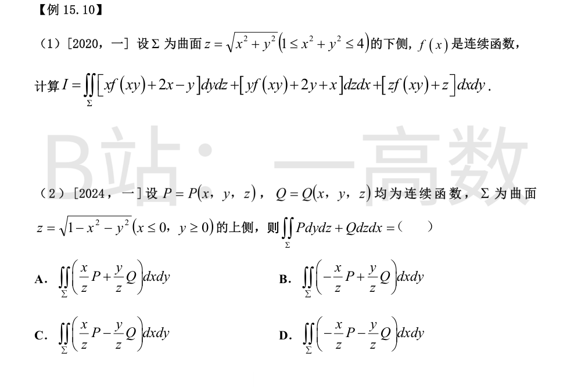
下侧投影公式：$\hat{\boldsymbol n}dS=(z_x,z_y,-1)dxdy$，$z=r$，$z_x=\frac xr,\ z_y=\frac yr$，投影 $D:\ 1\le x^2+y^2\le4$。
$$I=\iint_D\Big\{[xf(xy)+2x-y]\frac xr+[yf(xy)+2y+x]\frac yr-[rf(xy)+r]\Big\}dxdy.$$
f(xy) 的系数：$f\cdot\big(\frac{x^2+y^2}{r}-r\big)=f\cdot(r-r)=0$，与 f 无关地完全消去。剩余项：
$$\frac{2x^2-xy+2y^2+xy}{r}-r=\frac{2r^2}{r}-r=r.$$
$$I=\iint_D r\,dxdy=\int_0^{2\pi}\!\!\int_1^2 r^2dr\,d\theta=2\pi\cdot\frac{7}{3}=\frac{14\pi}{3}.$$
（取 $f(u)=e^u+\sin u^2$ 数值复核 $=14.660766=\frac{14\pi}{3}$ ✓）
上侧曲面 $z=z(x,y)$ 的转换公式：$\hat{\boldsymbol n}dS=(-z_x,-z_y,1)dxdy$。$z=\sqrt{1-x^2-y^2}$，$z_x=-\frac xz,\ z_y=-\frac yz$，故 $-z_x=\frac xz,\ -z_y=\frac yz$。
$$\iint_\Sigma P\,dydz+Q\,dzdx=\iint_D\Big(\frac{x}{z}P+\frac{y}{z}Q\Big)dxdy.\quad\text{选 A.}$$
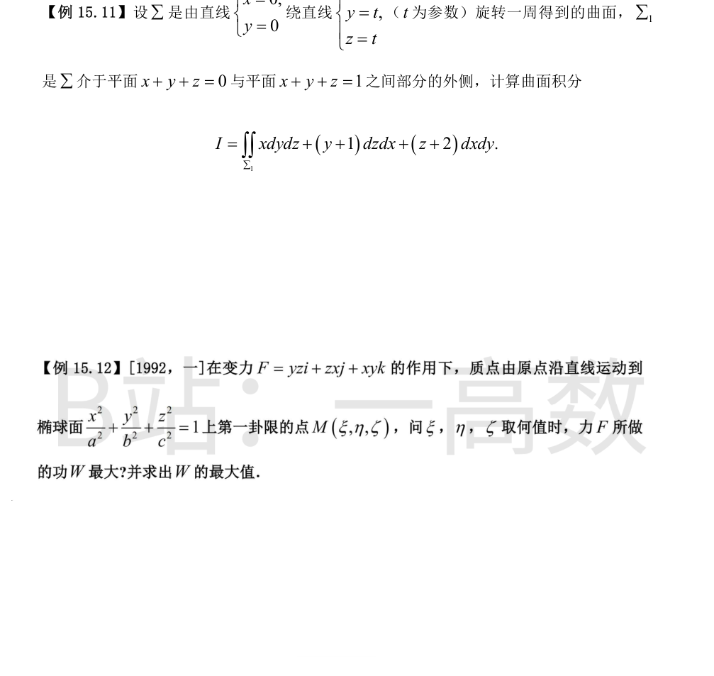
**旋转面**：母线为 z 轴，旋转轴为直线 $\{x=0,\ y=z\}$（方向 $(0,1,1)$），夹角 $45^\circ$，故曲面为半角 $45^\circ$ 的锥面：$\frac{(y+z)^2}{2}=x^2+y^2+z^2$，即 $x^2=2yz$。
**区域**：$\Omega=\{x^2\le2yz,\ 0\le x+y+z=:c\le1\}$。平面 $c=0$ 与锥仅交于原点（代入得 $(x+y)^2+y^2=0$）；$c=c_0>0$ 的截面在 xOy 上的投影为 $E_{c_0}=\{(x,y): (x+y)^2+(y-c_0)^2\le c_0^2\}$（面积 $\pi c_0^2$，线性替换 $u=x+y,\ v=y-c$ 行列式为 1）。故
$$V=\int_0^1|E_c|\,dc=\int_0^1\pi c^2dc=\frac{\pi}{3}.$$
**Gauss**：$\text{div}\,\boldsymbol F=3$。补 $D_1$：$x+y+z=1$ 上的 $E_1$，外法向 $\boldsymbol n=\frac{(1,1,1)}{\sqrt3}$：
$$\boldsymbol F\cdot\boldsymbol n=\frac{x+y+1+z+2}{\sqrt3}=\frac{c+3}{\sqrt3}=\frac4{\sqrt3},\quad dS=\sqrt3\,dxdy\Rightarrow \iint_{D_1}=4|E_1|=4\pi.$$
锥面块的外侧即 Ω 的外侧：$I=\oiint-\iint_{D_1}=3V-4\pi=\pi-4\pi=-3\pi$。
（数值验证：锥面 $(\rho,\theta)$ 参数化直接计算通量 $=-9.424778=-3\pi$ ✓）
沿直线 $(t\xi,t\eta,t\zeta)\ (0\le t\le1)$：$\boldsymbol F\cdot d\boldsymbol r=\big(yz\xi+zx\eta+xy\zeta\big)dt=3\xi\eta\zeta\,t^2dt$。
$$W=\int_0^1 3\xi\eta\zeta\,t^2dt=\xi\eta\zeta.$$
条件极值：$L=\xi\eta\zeta-\lambda\big(\frac{\xi^2}{a^2}+\frac{\eta^2}{b^2}+\frac{\zeta^2}{c^2}-1\big)$，驻点满足 $\eta\zeta=\frac{2\lambda\xi}{a^2}$ 等，三式分别乘 $\xi,\eta,\zeta$ 后相加得 $3\xi\eta\zeta=2\lambda$，进而 $\frac{\xi^2}{a^2}=\frac{\eta^2}{b^2}=\frac{\zeta^2}{c^2}=\frac13$。
$$\xi=\frac{\sqrt3}{3}a,\quad\eta=\frac{\sqrt3}{3}b,\quad\zeta=\frac{\sqrt3}{3}c,\quad W_{\max}=\xi\eta\zeta=\frac{abc}{3\sqrt3}=\frac{\sqrt3}{9}abc.$$
（边界上 $W=0$，故为最大值。）
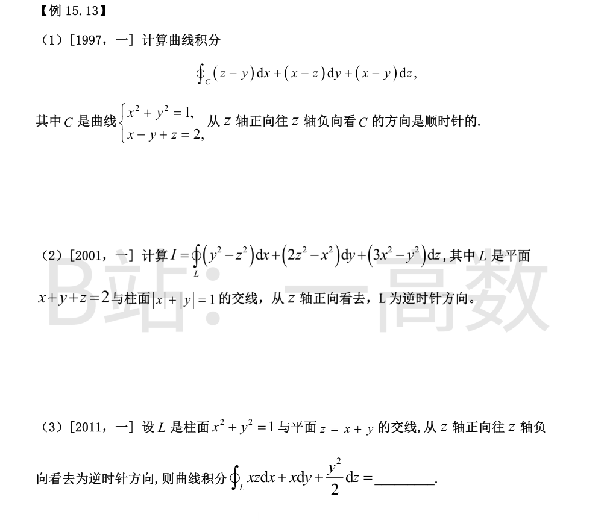
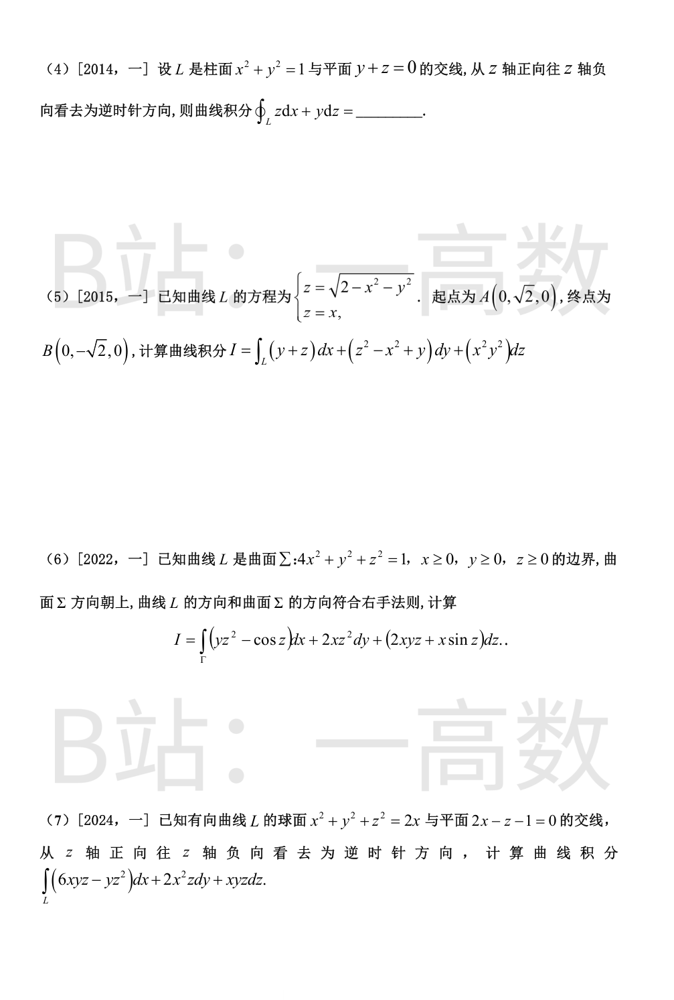
Stokes，取 C 所围的平面片（$x-y+z=2$ 内柱内部分）。$\text{rot}\,\boldsymbol F=(0,0,2)$。从 $+z$ 看顺时针 $\Rightarrow$ 按右手法则法向量朝下：$\boldsymbol n=\frac{(1,-1,-1)}{\sqrt3}$。
$$\oint_C=\iint_\Sigma(0,0,2)\cdot\frac{(1,-1,-1)}{\sqrt3}dS=-\frac{2}{\sqrt3}\iint_\Sigma dS.$$
平面片在 xOy 投影为单位圆，$dS=\sqrt{1+z_x^2+z_y^2}dxdy=\sqrt3\,dxdy$，面积 $=\sqrt3\pi$。
$$I=-\frac{2}{\sqrt3}\cdot\sqrt3\pi=-2\pi.\quad(\text{数值复核}=-6.283185\ \checkmark)$$
Stokes，取平面片上侧：$\hat{\boldsymbol n}dS=(1,1,1)dxdy$，$D:\ |x|+|y|\le1$（面积 2）。
$\text{rot}\,\boldsymbol F=(-2y-4z,\ -2z-6x,\ -2x-2y)$，点乘得 $-8x-4y-6z$，代 $z=2-x-y$：$-2x+2y-12$。
$$I=\iint_D(-2x+2y-12)dA=0+0-12\cdot2=-24.\quad(\text{数值复核}=-24.000000\ \checkmark)$$
Stokes，取平面片 $z=x+y$ 上侧：$\hat{\boldsymbol n}dS=(-z_x,-z_y,1)dxdy=(-1,-1,1)dxdy$，$D:\ x^2+y^2\le1$。$\text{rot}=(y,x,1)$：
$$\text{rot}\cdot\hat{\boldsymbol n}dS=(-y-x+1)dxdy\Rightarrow I=\iint_D(1-x-y)dxdy=\pi-0-0=\pi.$$
（数值复核 $=3.141593$ ✓）
$\text{rot}\,(z,0,y)=(1,1,0)$。取平面片 $z=-y$ 上侧：$\hat{\boldsymbol n}dS=(-z_x,-z_y,1)dxdy=(0,1,1)dxdy$，$D$ 为单位圆盘。
$$I=\iint_D(0\cdot1+1\cdot1+0)dxdy=\pi.\quad(\text{数值复核}=3.141593\ \checkmark)$$
由 $z=\sqrt{2-x^2-y^2}\ge0$ 且 $z=x$ 知 $L$ 为 $x\ge0$ 的半椭圆 $2x^2+y^2=2,\ z=x$。参数化（$A\to B$）：$x=\cos t,\ y=\sqrt2\sin t,\ z=\cos t$，$t:\ \frac\pi2\to-\frac\pi2$；$dx=dz=-\sin t\,dt,\ dy=\sqrt2\cos t\,dt$。
$$I=\int_{\pi/2}^{-\pi/2}\big[-\sqrt2\sin^2t-\sin t\cos t+2\sin t\cos t-\sqrt2\sin^2t\cos^2t\big]dt.$$
翻转积分限并利用奇偶性（$\sin t\cos t$ 为奇）：
$$I=\int_{-\pi/2}^{\pi/2}\big[\sqrt2\sin^2t-\sin t\cos t+\sqrt2\sin^2t\cos^2t\big]dt=\sqrt2\cdot\frac{\pi}{2}-0+\sqrt2\cdot\frac{\pi}{8}=\frac{5\sqrt2\pi}{8}.$$
（数值复核 $=2.776802$ ✓）
【仲裁修正】独立校验发现分歧，经仲裁重解，以本答案为准：B 错：参数化 x=cos t, y=√2 sin t, z=cos t（t: π/2→-π/2）积分得 √2·π/2+√2·π/8=5√2π/8，B 漏掉 x²y dz 项贡献的 √2π/8（数值复核 2.776802 ✓）
L 是闭曲线（椭球第一卦限片的三段弧）。$\text{rot}\,\boldsymbol F=(-2xz,\ 0,\ z^2)$。
补三块坐标面薄片与 Σ（外向）构成闭曲面：$\Sigma_1(z=0,\boldsymbol n=(0,0,-1))$ 上 $\text{rot}\cdot\boldsymbol n=0$；$\Sigma_2(x=0,\boldsymbol n=(-1,0,0))$ 上 $\text{rot}\cdot\boldsymbol n=2xz=0$；$\Sigma_3(y=0,\boldsymbol n=(0,-1,0))$ 上 $\text{rot}\cdot\boldsymbol n=0$。
由 $\text{div}(\text{rot}\,\boldsymbol F)\equiv0$：$\oiint_{\text{闭}}=0$，故 $I=\iint_\Sigma^{\text{上}}\text{rot}\cdot\boldsymbol n\,dS=0$。
（投影法复核：$I=\iint_D(-8x^2+z^2)dxdy$，$z^2=1-4x^2-y^2$，$u=2x,v=y$ 变换后 $=\frac12\iint_{\text{四分之一单位圆}}(1-3u^2-v^2)dudv=\frac12\big(\frac\pi4-\frac{3\pi}{16}-\frac{\pi}{16}\big)=0$ ✓，直接分段线积分数值亦 $=0$ ✓）
Stokes，取平面片 $z=2x-1$ 上侧：$\hat{\boldsymbol n}dS=(-z_x,-z_y,1)dxdy=(-2,0,1)dxdy$。$\text{rot}=(xz-2x^2,\ 6xy-3yz,\ z^2-2xz)$：
$$\text{rot}\cdot\hat{\boldsymbol n}dS=\big[-2(xz-2x^2)+(z^2-2xz)\big]dxdy=(4x^2-4xz+z^2)dxdy=(2x-z)^2dxdy.$$
平面上 $2x-z\equiv1$，故被积式 $\equiv1$，$I=$ 投影椭圆 $D$ 的面积。代入 $z=2x-1$ 于球面：$5(x-\frac35)^2+y^2=\frac45$，即 $(x-\frac35)^2/\frac{4}{25}+y^2/\frac45=1$，半轴 $\frac25,\ \frac{2}{\sqrt5}$：
$$I=\pi\cdot\frac25\cdot\frac{2}{\sqrt5}=\frac{4\pi}{5\sqrt5}=\frac{4\sqrt5\pi}{25}.$$
（数值复核：沿交线直接积分 $=1.123970$ ✓）
【仲裁修正】独立校验发现分歧，经仲裁重解，以本答案为准：A 错：rot·n̂dS=(2x-z)²dxdy≡1，I=投影椭圆面积 π·(2/5)·(2/√5)=4√5π/25，A 把椭圆面积算成 π/√5（数值复核 1.123970 ✓）